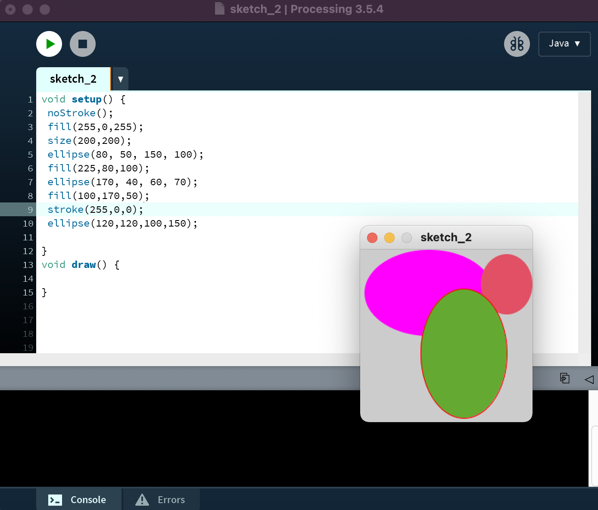
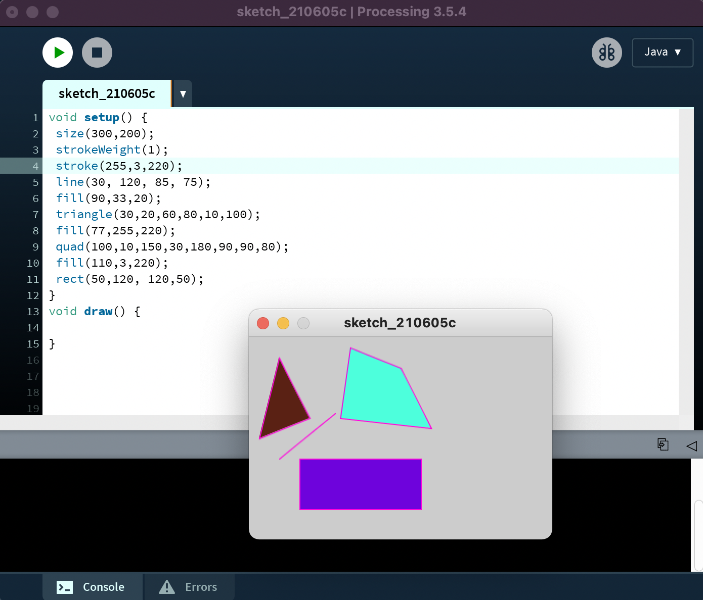
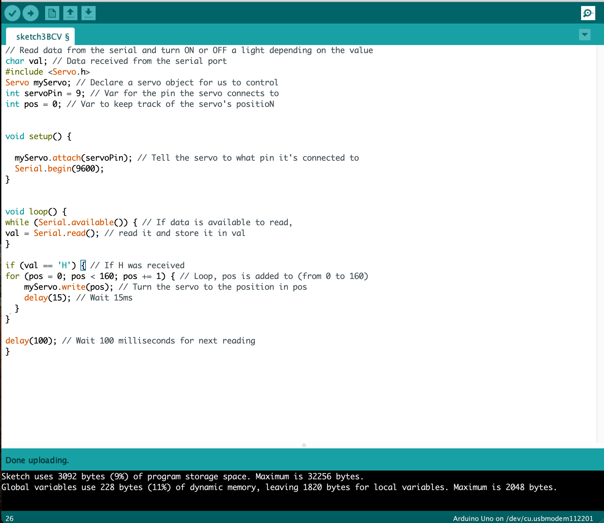
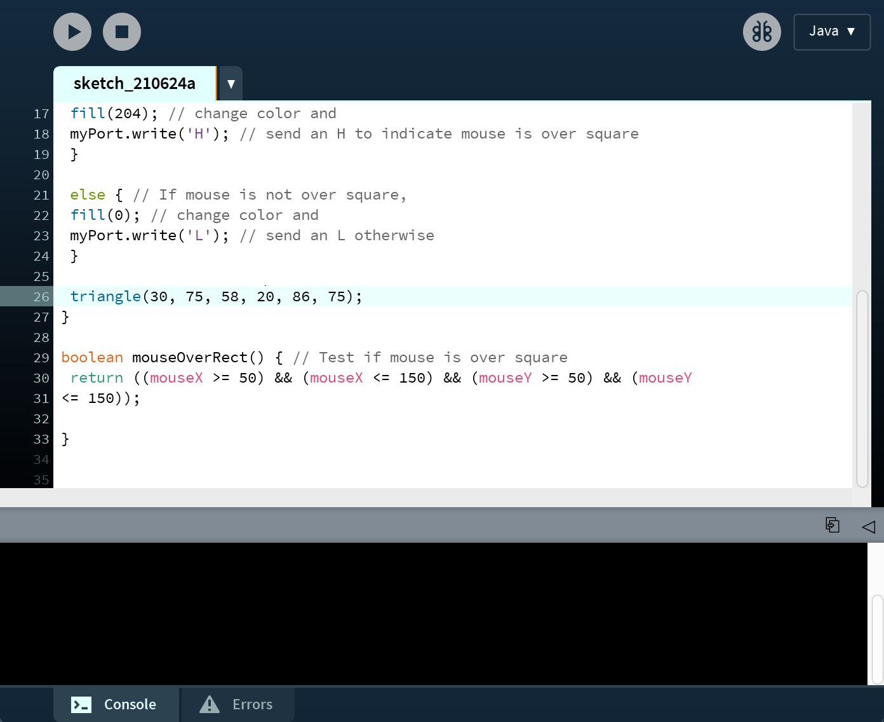
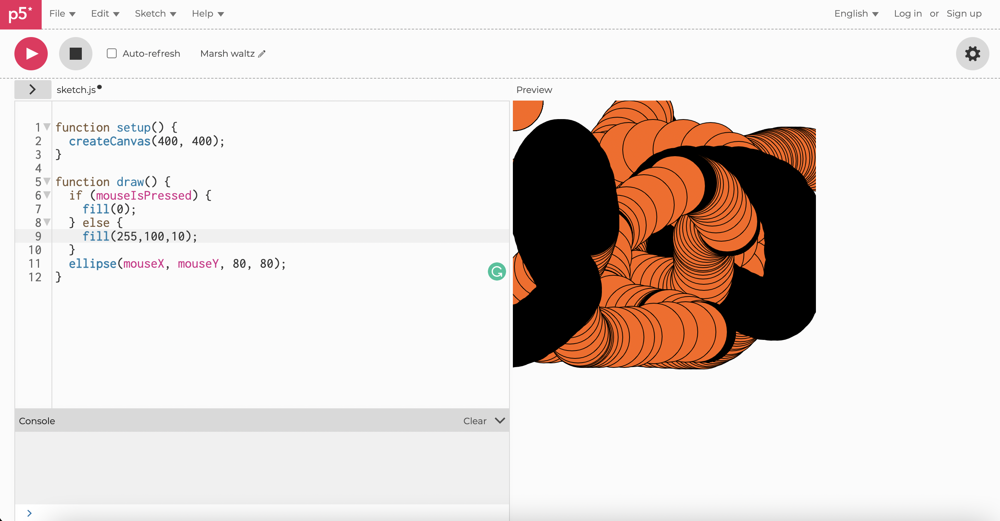

Workshop computer vision
Opdracht 2F
Door voordat je de ellipse tekent een kleur te geven zal de ellipse die erna komt in die kleur tevoorschijn komen. Daarom heb ik die regels een paar keer herhaald en de zowel kleurwaardes als de loactie waardes aangepast om ze van elkaar te onderscheiden.
Opdracht 2I
Met 'stroke' gaf ik alle vormen een gekleurde omlijning. Verder heb ik de handleiding gevolgd om te zien welke waardes de x en y waardes waren voor welk punt van de vorm, daarmee kon ik ze een vorm geven en op verschillende plekken zetten. Met de 'fill' regel heb ik de vormen kleuren gegeven.
Opdracht 2O
Ik heb een driehoekvorm toegevoegd met 'triangle', die heb ik geplaatst door de waardes van de muisX en muisY waardes te nemen en daar een hoeveelheid bij op te tellen, zodat het een driehoek zou zijn en hij niet over de cirkel heen zou vallen. Aan de hand van een if functie heb ik ervoor gezorgd dat mijn ellipse een ander kleur zou hebben als de muis een grotere x waarde zou hebben dan 60.
Opdracht 3B
Ik heb hier de code zo aangepast zodat ik mijn servomotor van Arduino kon gebruiken, en dat er in processing een driehoek zou worden gemaakt die van kleur veranderd wanneer je er met je muis overheen gaat, wat er ook voor zorgt dat de servomotor in dat geval een bepaalde kant op begint te draaien.
 Opdracht 5C
Ik heb de waardes van de fill regel aangepast zodat er nu niet een witte maar een oranje kleur zou komen wanneer je de muis niet indrukt.
Opdracht 5E
Ik heb een van de face recognition voorbeelden gekozen en daaraan gesleuteld totdat ik iets werkends kreeg. Ik heb verschillende dingen proberen aan te passen maar niet altijd werkte het beeld dan nog, wel begreep ik daardoor beter welk stukje code precies waarvoor zorgt. Uiteindelijk heb ik gespeelt met de grootte van de stippen en de kleuren.
Link naar de sketch